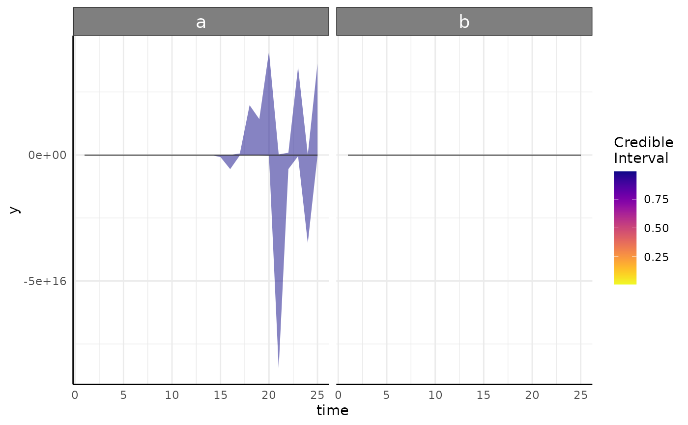

Function to help fulfill elements of the Bayesian Analysis Reporting Guidelines.
Source:R/barg.R
barg.RdThe Bayesian Analysis Reporting Guidelines were put forward by Kruschke (https://www.nature.com/articles/s41562-021-01177-7) to aide in reproducibility and documentation of Bayesian statistical analyses that are sometimes unfamiliar to reviewers or scientists. The purpose of this function is to summarize goodness of fit metrics from one or more Bayesian models made by growthSS and fitGrowth. See details for explanations of those metrics and the output.
Arguments
- fit
The brmsfit object or a list of brmsfit objects in the case that you split models to run on subsets of the data for computational simplicity.
- ss
The growthSS output used to specify the model. If fit is a list then this can either be one growthSS list in which case the priors are assumed to be the same for each model or it can be a list of the same length as fit. Note that the only parts of this which are used are the
call$startwhich is expected to be a call,pcvrForm, anddflist elements, so if you have a list of brmsfit objects and no ss object you can specify a stand-in list. This can also be left NULL (the default) and posterior predictive plots and prior predictive plots will not be made.
Value
A named list containing Rhat, ESS, NEFF, and Trace/Prior/Posterior Predictive plots. See details for interpretation.
Details
General: This includes chain number, length, and total divergent transitions per model. Divergent transitions are a marker that the MCMC had something go wrong. Conceptually it may be helpful to think about rolling a marble over a 3D curve then having the marble suddenly jolt in an unexpected direction, something happened that suggests a problem/misunderstood surface. In practice you want extremely few (ideally no) divergences. If you do have divergences then consider specifying more control parameters (see brms::brm or examples for fitGrowth). If the problem persists then the model may need to be simplified. For more information on MCMC and divergence see the stan manual (https://mc-stan.org/docs/2_19/reference-manual/divergent-transitions).
ESS: ESS stands for Effective Sample Size and is a goodness of fit metric that approximates the number of independent replicates that would equate to the same amount of information as the (autocorrelated) MCMC iterations. ESS of 1000+ is often considered as a pretty stable value, but more is better. Still, 100 per chain may be plenty depending on your applications and the inference you wish to do. One of the benefits to using lots of chains and/or longer chains is that you will get more complete information and that benefit will be shown by a larger ESS. This is separated into "bulk" and "tail" to represent the middle and tails of the posterior distribution, since those can sometimes have very different sampling behavior. A summary and the total values are returned, with the summary being useful if several models are included in a list for fit argument
Rhat: Rhat is a measure of "chain mixture". It compares the between vs within chain values to assess how well the chains mixed. If chains did not mix well then Rhat will be greater than 1, with 1.05 being a broadly agreed upon cutoff to signify a problem. Running longer chains should result in lower Rhat values. The default in brms is to run 4 chains, partially to ensure that there is a good chance to check that the chains mixed well via Rhat. A summary and the total values are returned, with the summary being useful if several models are included in a list for fit argument
NEFF: NEFF is the NEFF ratio (Effective Sample Size over Total MCMC Sample Size). Values greater than 0.5 are generally considered good, but there is a consensus that lower can be fine down to about 0.1. A summary and the total values are returned, with the summary being useful if several models are included in a list for fit argument
mcmcTrace: A plot of each model's MCMC traces. Ideally these should be very mixed and stationary. For more options for visualizing MCMC diagnostics see
bayesplot::mcmc_trace.priorPredictive: A plot of data simulated from the prior using plotPrior. This should generate data that is biologically plausible for your situation, but it will probably be much more variable than your data. That is the effect of the mildly informative thick tailed lognormal priors. If you specified non-default style priors then this currently will not work.
posteriorPredictive: A plot of each model's posterior predictive interval over time. This is the same as plots returned from growthPlot and shows 1-99 coming to a mean yellow trend line. These should encompass the overwhelming majority of your data and ideally match the variance pattern that you see in your data. If parts of the predicted interval are biologically impossible (area below 0, percentage about 100 model should be reconsidered.
See also
plotPrior for visual prior predictive checks.
Examples
# \donttest{
simdf <- growthSim("logistic",
n = 20, t = 25,
params = list("A" = c(200, 160), "B" = c(13, 11), "C" = c(3, 3.5))
)
ss <- growthSS(
model = "logistic", form = y ~ time | id / group, sigma = "logistic",
df = simdf, start = list(
"A" = 130, "B" = 12, "C" = 3,
"sigmaA" = 20, "sigmaB" = 10, "sigmaC" = 2
), type = "brms"
)
fit_test <- fitGrowth(ss,
iter = 600, cores = 1, chains = 1, backend = "cmdstanr",
sample_prior = "only" # only sampling from prior for speed
)
#> Start sampling
#> Init values were only set for a subset of parameters.
#> Missing init values for the following parameters:
#> Intercept_nu
#>
#> To disable this message use options(cmdstanr_warn_inits = FALSE).
#> Running MCMC with 1 chain...
#>
#> Chain 1 Iteration: 1 / 600 [ 0%] (Warmup)
#> Chain 1 Iteration: 100 / 600 [ 16%] (Warmup)
#> Chain 1 Iteration: 200 / 600 [ 33%] (Warmup)
#> Chain 1 Iteration: 300 / 600 [ 50%] (Warmup)
#> Chain 1 Iteration: 301 / 600 [ 50%] (Sampling)
#> Chain 1 Iteration: 400 / 600 [ 66%] (Sampling)
#> Chain 1 Iteration: 500 / 600 [ 83%] (Sampling)
#> Chain 1 Iteration: 600 / 600 [100%] (Sampling)
#> Chain 1 finished in 0.0 seconds.
#> Loading required package: rstan
#> Loading required package: StanHeaders
#>
#> rstan version 2.32.6 (Stan version 2.32.2)
#> For execution on a local, multicore CPU with excess RAM we recommend calling
#> options(mc.cores = parallel::detectCores()).
#> To avoid recompilation of unchanged Stan programs, we recommend calling
#> rstan_options(auto_write = TRUE)
#> For within-chain threading using `reduce_sum()` or `map_rect()` Stan functions,
#> change `threads_per_chain` option:
#> rstan_options(threads_per_chain = 1)
barg(fit_test, ss)
#> Warning: The ESS has been capped to avoid unstable estimates.
#> Warning: The ESS has been capped to avoid unstable estimates.
#> Warning: The ESS has been capped to avoid unstable estimates.
#> $General
#> chains iter num.divergent model
#> 1 1 600 0 1
#>
#> $Rhat
#> $Rhat$summary
#> b_nu_Intercept b_A_groupa b_A_groupb b_B_groupa b_B_groupb b_C_groupa
#> Min. 0.9967871 1.019397 1.010245 1.003884 1.005592 0.9968155
#> 1st Qu. 0.9967871 1.019397 1.010245 1.003884 1.005592 0.9968155
#> Median 0.9967871 1.019397 1.010245 1.003884 1.005592 0.9968155
#> Mean 0.9967871 1.019397 1.010245 1.003884 1.005592 0.9968155
#> 3rd Qu. 0.9967871 1.019397 1.010245 1.003884 1.005592 0.9968155
#> Max. 0.9967871 1.019397 1.010245 1.003884 1.005592 0.9968155
#> b_C_groupb b_sigmaA_groupa b_sigmaA_groupb b_sigmaB_groupa
#> Min. 1.001343 1.008301 1.003969 1.007346
#> 1st Qu. 1.001343 1.008301 1.003969 1.007346
#> Median 1.001343 1.008301 1.003969 1.007346
#> Mean 1.001343 1.008301 1.003969 1.007346
#> 3rd Qu. 1.001343 1.008301 1.003969 1.007346
#> Max. 1.001343 1.008301 1.003969 1.007346
#> b_sigmaB_groupb b_sigmaC_groupa b_sigmaC_groupb Intercept_nu lprior
#> Min. 0.9998079 1.001971 1.004493 0.9967871 1.003223
#> 1st Qu. 0.9998079 1.001971 1.004493 0.9967871 1.003223
#> Median 0.9998079 1.001971 1.004493 0.9967871 1.003223
#> Mean 0.9998079 1.001971 1.004493 0.9967871 1.003223
#> 3rd Qu. 0.9998079 1.001971 1.004493 0.9967871 1.003223
#> Max. 0.9998079 1.001971 1.004493 0.9967871 1.003223
#> lp__
#> Min. 1.007073
#> 1st Qu. 1.007073
#> Median 1.007073
#> Mean 1.007073
#> 3rd Qu. 1.007073
#> Max. 1.007073
#>
#> $Rhat$complete
#> b_nu_Intercept b_A_groupa b_A_groupb b_B_groupa b_B_groupb b_C_groupa
#> 1 0.9967871 1.019397 1.010245 1.003884 1.005592 0.9968155
#> b_C_groupb b_sigmaA_groupa b_sigmaA_groupb b_sigmaB_groupa b_sigmaB_groupb
#> 1 1.001343 1.008301 1.003969 1.007346 0.9998079
#> b_sigmaC_groupa b_sigmaC_groupb Intercept_nu lprior lp__ model
#> 1 1.001971 1.004493 0.9967871 1.003223 1.007073 1
#>
#>
#> $NEFF
#> $NEFF$summary
#> b_nu_Intercept b_A_groupa b_A_groupb b_B_groupa b_B_groupb b_C_groupa
#> Min. 0.8242433 0.4796173 0.4625026 0.6216885 0.8039098 0.8473324
#> 1st Qu. 0.8242433 0.4796173 0.4625026 0.6216885 0.8039098 0.8473324
#> Median 0.8242433 0.4796173 0.4625026 0.6216885 0.8039098 0.8473324
#> Mean 0.8242433 0.4796173 0.4625026 0.6216885 0.8039098 0.8473324
#> 3rd Qu. 0.8242433 0.4796173 0.4625026 0.6216885 0.8039098 0.8473324
#> Max. 0.8242433 0.4796173 0.4625026 0.6216885 0.8039098 0.8473324
#> b_C_groupb b_sigmaA_groupa b_sigmaA_groupb b_sigmaB_groupa
#> Min. 0.6606381 0.5294243 0.7920633 0.7537733
#> 1st Qu. 0.6606381 0.5294243 0.7920633 0.7537733
#> Median 0.6606381 0.5294243 0.7920633 0.7537733
#> Mean 0.6606381 0.5294243 0.7920633 0.7537733
#> 3rd Qu. 0.6606381 0.5294243 0.7920633 0.7537733
#> Max. 0.6606381 0.5294243 0.7920633 0.7537733
#> b_sigmaB_groupb b_sigmaC_groupa b_sigmaC_groupb Intercept_nu lprior
#> Min. 0.4098103 0.5522034 0.9414743 0.8242433 0.4549344
#> 1st Qu. 0.4098103 0.5522034 0.9414743 0.8242433 0.4549344
#> Median 0.4098103 0.5522034 0.9414743 0.8242433 0.4549344
#> Mean 0.4098103 0.5522034 0.9414743 0.8242433 0.4549344
#> 3rd Qu. 0.4098103 0.5522034 0.9414743 0.8242433 0.4549344
#> Max. 0.4098103 0.5522034 0.9414743 0.8242433 0.4549344
#> lp__
#> Min. 0.4026582
#> 1st Qu. 0.4026582
#> Median 0.4026582
#> Mean 0.4026582
#> 3rd Qu. 0.4026582
#> Max. 0.4026582
#>
#> $NEFF$complete
#> b_nu_Intercept b_A_groupa b_A_groupb b_B_groupa b_B_groupb b_C_groupa
#> 1 0.8242433 0.4796173 0.4625026 0.6216885 0.8039098 0.8473324
#> b_C_groupb b_sigmaA_groupa b_sigmaA_groupb b_sigmaB_groupa b_sigmaB_groupb
#> 1 0.6606381 0.5294243 0.7920633 0.7537733 0.4098103
#> b_sigmaC_groupa b_sigmaC_groupb Intercept_nu lprior lp__ model
#> 1 0.5522034 0.9414743 0.8242433 0.4549344 0.4026582 1
#>
#>
#> $ESS
#> $ESS$summary
#> A_groupa A_groupb B_groupa B_groupb C_groupa C_groupb
#> Bulk_ESS.Min. 623.5990 553.2634 726.1598 379.5054 703.5870 595.6773
#> Bulk_ESS.1st Qu. 623.5990 553.2634 726.1598 379.5054 703.5870 595.6773
#> Bulk_ESS.Median 623.5990 553.2634 726.1598 379.5054 703.5870 595.6773
#> Bulk_ESS.Mean 623.5990 553.2634 726.1598 379.5054 703.5870 595.6773
#> Bulk_ESS.3rd Qu. 623.5990 553.2634 726.1598 379.5054 703.5870 595.6773
#> Bulk_ESS.Max. 623.5990 553.2634 726.1598 379.5054 703.5870 595.6773
#> Tail_ESS.Min. 143.8852 138.7508 186.5065 241.1729 254.1997 198.1914
#> Tail_ESS.1st Qu. 143.8852 138.7508 186.5065 241.1729 254.1997 198.1914
#> Tail_ESS.Median 143.8852 138.7508 186.5065 241.1729 254.1997 198.1914
#> Tail_ESS.Mean 143.8852 138.7508 186.5065 241.1729 254.1997 198.1914
#> Tail_ESS.3rd Qu. 143.8852 138.7508 186.5065 241.1729 254.1997 198.1914
#> Tail_ESS.Max. 143.8852 138.7508 186.5065 241.1729 254.1997 198.1914
#> nu_Intercept sigmaA_groupa sigmaA_groupb sigmaB_groupa
#> Bulk_ESS.Min. 631.0697 699.8421 743.1364 379.198
#> Bulk_ESS.1st Qu. 631.0697 699.8421 743.1364 379.198
#> Bulk_ESS.Median 631.0697 699.8421 743.1364 379.198
#> Bulk_ESS.Mean 631.0697 699.8421 743.1364 379.198
#> Bulk_ESS.3rd Qu. 631.0697 699.8421 743.1364 379.198
#> Bulk_ESS.Max. 631.0697 699.8421 743.1364 379.198
#> Tail_ESS.Min. 247.2730 158.8273 237.6190 226.132
#> Tail_ESS.1st Qu. 247.2730 158.8273 237.6190 226.132
#> Tail_ESS.Median 247.2730 158.8273 237.6190 226.132
#> Tail_ESS.Mean 247.2730 158.8273 237.6190 226.132
#> Tail_ESS.3rd Qu. 247.2730 158.8273 237.6190 226.132
#> Tail_ESS.Max. 247.2730 158.8273 237.6190 226.132
#> sigmaB_groupb sigmaC_groupa sigmaC_groupb
#> Bulk_ESS.Min. 661.8827 440.0539 740.4436
#> Bulk_ESS.1st Qu. 661.8827 440.0539 740.4436
#> Bulk_ESS.Median 661.8827 440.0539 740.4436
#> Bulk_ESS.Mean 661.8827 440.0539 740.4436
#> Bulk_ESS.3rd Qu. 661.8827 440.0539 740.4436
#> Bulk_ESS.Max. 661.8827 440.0539 740.4436
#> Tail_ESS.Min. 122.9431 165.6610 282.4423
#> Tail_ESS.1st Qu. 122.9431 165.6610 282.4423
#> Tail_ESS.Median 122.9431 165.6610 282.4423
#> Tail_ESS.Mean 122.9431 165.6610 282.4423
#> Tail_ESS.3rd Qu. 122.9431 165.6610 282.4423
#> Tail_ESS.Max. 122.9431 165.6610 282.4423
#>
#> $ESS$complete
#> par Bulk_ESS Tail_ESS model
#> 1 nu_Intercept 631.0697 247.2730 1
#> 2 A_groupa 623.5990 143.8852 1
#> 3 A_groupb 553.2634 138.7508 1
#> 4 B_groupa 726.1598 186.5065 1
#> 5 B_groupb 379.5054 241.1729 1
#> 6 C_groupa 703.5870 254.1997 1
#> 7 C_groupb 595.6773 198.1914 1
#> 8 sigmaA_groupa 699.8421 158.8273 1
#> 9 sigmaA_groupb 743.1364 237.6190 1
#> 10 sigmaB_groupa 379.1980 226.1320 1
#> 11 sigmaB_groupb 661.8827 122.9431 1
#> 12 sigmaC_groupa 440.0539 165.6610 1
#> 13 sigmaC_groupb 740.4436 282.4423 1
#>
#>
#> $mcmcTrace
#> $mcmcTrace[[1]]
#>
#>
#> $priorPredictive
#> $priorPredictive[[1]]
#>
#>
#> $posteriorPredictive
#> $posteriorPredictive[[1]]

#>
#>
fit_2 <- fit_test
fit_list <- list(fit_test, fit_2)
x <- barg(fit_list, list(ss, ss))
#> Warning: The ESS has been capped to avoid unstable estimates.
#> Warning: The ESS has been capped to avoid unstable estimates.
#> Warning: The ESS has been capped to avoid unstable estimates.
#> Warning: The ESS has been capped to avoid unstable estimates.
#> Warning: The ESS has been capped to avoid unstable estimates.
#> Warning: The ESS has been capped to avoid unstable estimates.
# }